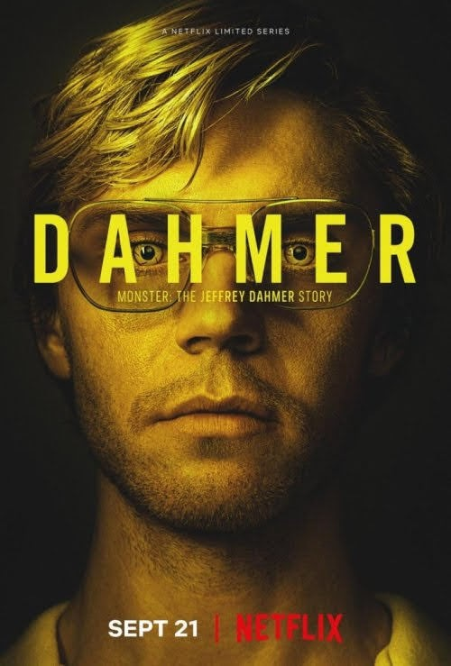

El interés de Dahmer por los cadáveres se inicia desde muy pequeño en su niñez, junto a su padre, cuando este le enseña a diseccionar animales muertos como forma de compartir momentos de cercanía con su hijo realizando el hobby que le apasionaba. Estos sucesos impulsan su obsesión por la muerte y los cuerpos sin vida, lo que resulta en su primer homicidio accidental en 1978 a la edad de 18 años.
Entre los años 1978 y 1991, Jeffrey Dahmer asesinó a 17 personas, siendo todas sus víctimas hombres y niños adolescentes, principalmente afroamericanos. Todos sus crímenes fueron cometidos en Wisconsin y Ohio..